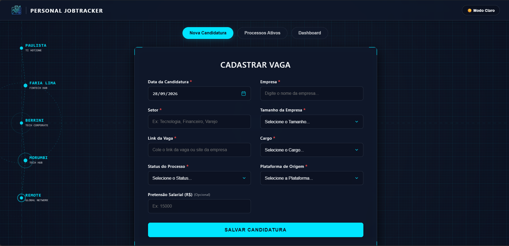
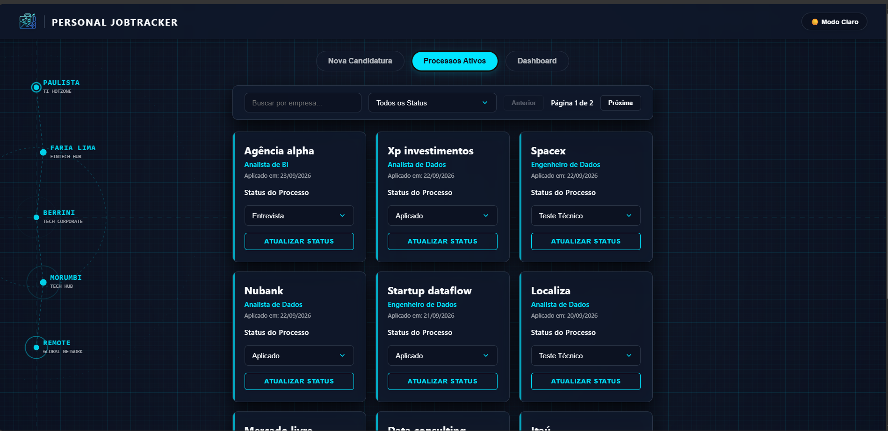
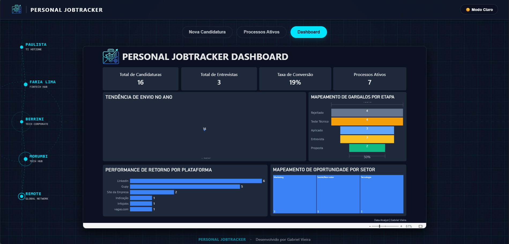

Gabriel Vieira
Analista de Dados | Analytics Engineer
Transformo dados complexos em decisões estratégicas. Com apurado Business Sense e mentalidade Data-Driven, desenvolvo análises profundas, dashboards interativos e modelagens dimensionais, unindo governança e Inteligência Artificial para entregar insights de alto valor ao negócio.
Da Governança de Dados à Engenharia Analítica
A união do pragmatismo operacional e controle rigoroso à modelagem de dados estruturada para impulsionar decisões da diretoria.
Analytics Engineering & Data Quality
Forte background em controle de acesso e segurança da informação, convertendo o rigor e a governança de ambientes corporativos complexos em fundamentos sólidos para a estruturação de data warehouses e pipelines analíticos confiáveis.
CRISP-DM & AI-Driven Architecture
Aplicação rigorosa da metodologia global CRISP-DM em todo o ciclo de vida dos dados, acelerada por Inteligência Artificial Generativa e modelagem dimensional para transformar fluxos brutos em respostas analíticas acionáveis.
Business Sense & Certificações
Forte Business Sense e facilidade de comunicação executiva e técnica, somados à proficiência em Inglês Avançado e foco estratégico nas certificações oficiais Microsoft PL-300 (Power BI) e DP-600 (Fabric Analytics Engineer).
Competências por Domínio de Valor
Estrutura técnica dashboard-style unindo engenharia em nuvem resiliente, aceleração com IA e governança analítica orientada a decisões executivas.
Analytics Engineering & BI
Desenvolvimento de modelos dimensionais robustos no Azure SQL Database e relatórios avançados no Power BI com Power Query, DAX e Linguagem M.
Cloud, Infraestrutura & CI/CD
Sustentação de ambientes críticos (Linux, SAP), orquestração de pipelines transacionais assíncronos via Power Automate e deploy contínuo com Azure Static Web Apps.
Inteligência Artificial & GenAI
Utilização de IA Agêntica e Vibe Coding para desenvolvimento estrutural e automação de fluxos, aliado à rigorosa Governança de Dados e metodologias (CRISP-DM, ITIL).
Personal JobTracker — Ecossistema Analítico End-to-End
Desenvolvimento end-to-end de uma aplicação Serverless (Single Page Application) na nuvem. Utilizo o Microsoft Power Automate como ponte transacional, inserindo dados via Stored Procedures em um Azure SQL Database modelado em Star Schema. O frontend é hospedado no Azure Static Web Apps com deploy contínuo (CI/CD) via GitHub Actions, e o consumo de métricas ocorre de forma autônoma via dashboards embutidos do Power BI.
App Customizado & Webhook
Captura de dados transacionais no Front-end (JS) e orquestração assíncrona orientada a eventos via Microsoft Power Automate.
Azure SQL (Star Schema)
Repositório relacional central na nuvem. Os dados são estruturados fisicamente em tabelas Fato e Dimensões, garantindo integridade referencial.
Microsoft Power Query
Conexão direta com a nuvem para extração, limpeza e tratamento avançado de dados (Linguagem M), utilizando Query Folding para otimizar a performance na fonte.
Power BI & DAX
Camada semântica processada em memória. Utiliza DAX para cálculos complexos e Time Intelligence, alimentando painéis executivos com métricas de alto impacto.



Formação Acadêmica & Certificações
Formação Acadêmica
Análise e Desenvolvimento de Sistemas
Formação estruturada com ênfase prática em engenharia de software, modelagem de dados relacional e dimensional, algoritmos de alta eficiência, arquitetura de sistemas corporativos e governança tecnológica.
Especializações & Badges Oficiais
Formação Profissional em Análise de Dados
Bootcamp de Análise de Dados em formato de imersão integral de 480 horas, focado na resolução de desafios reais de negócios e no desenvolvimento de fortes capacidades analíticas. A formação engloba o ciclo completo dos dados, desde a extração e modelagem estrutural com SQL e Excel, até a criação de painéis interativos em PowerBI. O programa também integra o uso estratégico de Inteligência Artificial (IA) para acelerar insights, combinando habilidades técnicas com resolução de problemas e comunicação eficaz de métricas para a tomada de decisão.

Power BI Data Analyst Associate (PL-300)
Domínio certificado em modelagem dimensional tabular avançada, DAX analítico de alta performance, governança de workspaces e distribuição de métricas no Power BI Service.

Fabric Analytics Engineer Associate (DP-600)
Arquitetura de dados moderna unificada na nuvem, implementação de Lakehouse e Warehouse, pipelines Delta Lake e modelos semânticos escaláveis no ecossistema Microsoft Fabric.
Pronto para impulsionar a inteligência de dados da sua equipe?
Disponível para novos desafios como Analista de Dados ou Analytics Engineer, unindo arquitetura moderna em nuvem, precisão operacional e modelos preditivos de inteligência artificial.